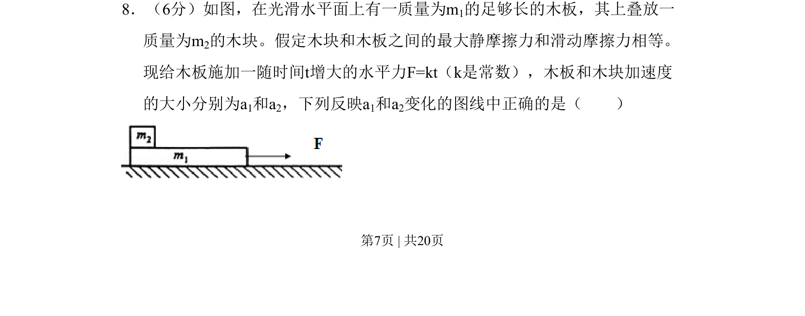
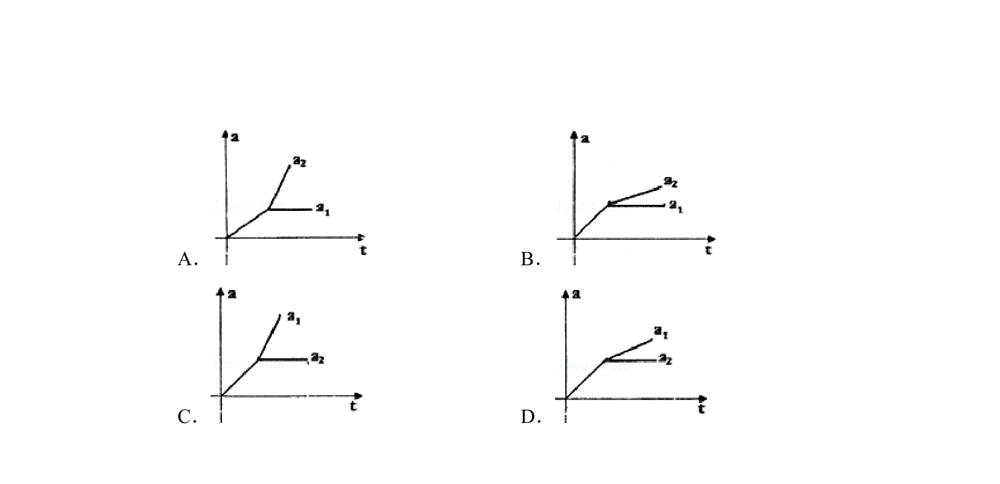
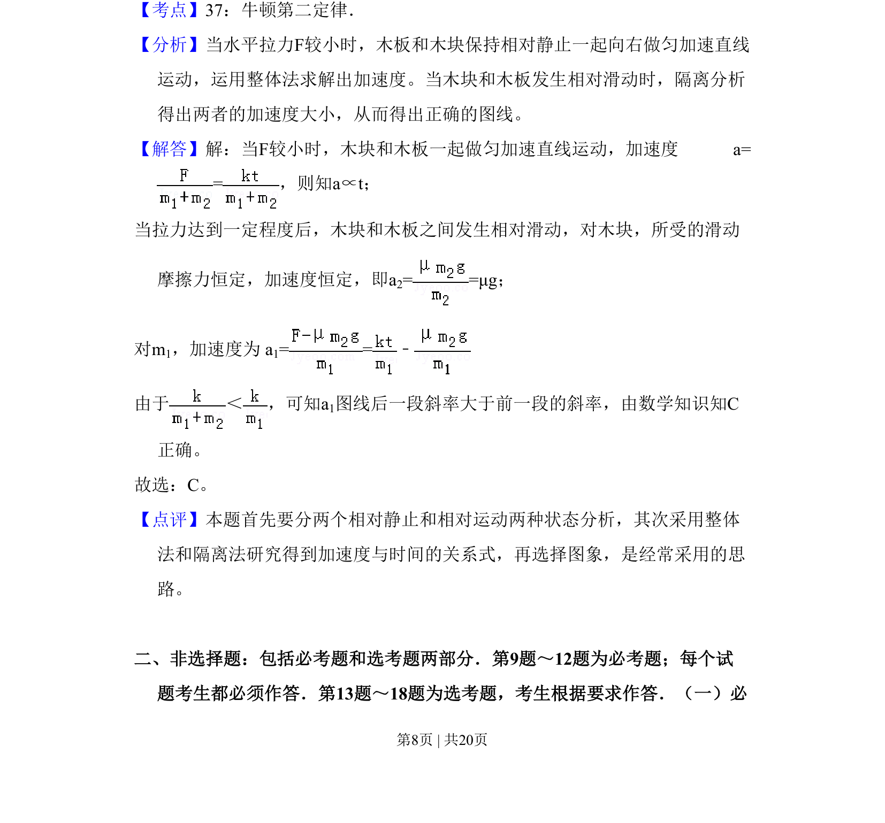

考点：滑动摩擦力 静摩擦力 牛顿第二定律 临界状态


木块叠放于木板上，在随时间线性增大的外力作用下，分析两物体加速度随外力变化的图像。

📄 原 PDF 第 7 页：
素材/真题/吉林/2008-2024·（吉林）物理高考真题/2011年高考物理试卷（新课标）（解析卷）.pdf
8．（6分）如图，在光滑水平面上有一质量为m1的足够长的木板，其上叠放一 质量为m2的木块。假定木块和木板之间的最大静摩擦力和滑动摩擦力相等。 现给木板施加一随时间t增大的水平力F=kt（k是常数），木板和木块加速度 的大小分别为a1和a2，下列反映a1和a2变化的图线中正确的是（ ）